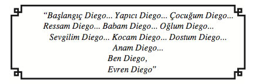

13
NİSA SEZEN
Ertesi gün, Sezenler’in Yeniköy’deki yalısına davet ediliyor Nehir. Davet sahibi, Nisa Sezen. Düzenleyicisi, senaristi, sahneye koyanı, yönetmeni ise annesiyle Nehir’in arasındaki “köprü” görevini seve seve üstlenen Dila.
“Akşamüzeri çaya bekliyor annem,” diyor telefonda. “Seni tablolarıyla tanıştırabileceğini söyledi.
Aslına bakarsan, biraz dil dökmem gerekti. Yanlış anlama, sana değil tavrı. Eve gelen konuklarla resim çalışmalarını paylaşmaktan pek hoşlanmaz annem. Sanatçıların dünyasına girmek zor, anlayacağın. Ama senin, öncelikle resimlerle ilgileneceğini peşinen kabul etti.”
Deniz gelmemiş. İşlerinin yoğunluğunu bahane etse de resim seçimini, kadınların aralarında halledeceği bir durum, diye nitelediği kesin.
Nisa Sezen, Dila ve Nehir, Yeniköy’deki muhteşem yalının salonunda, denize karşı oturmuş çaylarını yudumlarken, henüz kendisine tanınan ayrıcalığın farkında değil Nehir.
Manolya Konakları’na armağan edilecek tablonun seçiminde, onun fikrini de alacak olmaları büyük incelik. Kafasındaki zamanlamaya göre, çay saatinin bitiminde Nisa Hanım birkaç tablo gösterip seçim yapmalarını isteyecek ya da kendi seçtiği tabloyu elleriyle teslim edecek. Tüm beklentisi bundan ibaret Nehir’in.
Orada, sıradan bir konuk gibi koltuğa kurulmuş, Boğaz’ın sularını seyrederken, ziyaretinin burada noktalanmayıp köşkün bir başka bölümünde; soluk kesici bir serüvene, gerçek bir yaşam dersine dönüşerek süreceğini aklına bile getirmiyor.
Nisa Sezen ellili yaşlardan hiç payını almamışçasına genç görünümlü, bol ipek giysisinin içinde salınan incecik bedeniyle, konuşma aralarında denizin maviliğine teslim etmeyi yeğlediği buğulu ela gözleriyle, içinde yaşanılan dünyaya değil de gizemli, soyut, bambaşka bir âleme ait sanki. Ses tonu alçak, hep aynı düzeyde; konuştuğunda kadifeye dokunuş hissi yaratıyor karşıdakinde. Kokteylde karşılaştıkları ilk gün sıkı bir topuzun içine hapsedilmiş saçları, doğal dalgalar halinde omuzlarından aşağıya dökülüyor.
Güzel bir kadın! Ama, güzellikten öte, masalsı bir çekiciliğe sahip. “Aura” dedikleri, az sayıda insana kucak açan özel çekim alanının odağına kurulmuş, bu alanın içine girecek erkek-dişi herkesi etkileyerek kendisine tutsak etmeye hazır, ayrıcalığının saltanatını sürüyor.
Çay servisi bitti. Dila’nın gözü, annesinden gelecek komutta. Nisa Hanım’ın uzaksıl bir gülüşle hafifçe başını eğmesi yeterli oluyor.
“Atölyeye geçebiliriz artık,” diyor Dila.
Bu iyi işte. Bir ressamı ilk kez yakından tanıma fırsatı bulmak bir yana, tabloları doğdukları yerde, atölyede görebileceği için şanslı olduğunu düşünüyor Nehir.
Önde Nisa Hanım, arkasında Dila ve Nehir, yalı binasını bahçeden ayıran mermer yol boyunca yürümeye başlıyorlar. Yeşillik, çiçek ve ağaç yoğunluğu gitgide artmakta. İki yanı ve tepesi sarmaşıklarla örtülü upuzun bir çardağın altından geçerek ulaştıkları kapı, ulu ağaçların gölgesine gizlenmiş, tek katlı bir binaya ait.
“İşte annemin mabedi!” diye fısıldıyor Dila. “Varlığını bilsek de Nisa Sultan’ın gizli tapınağıdır burası.”
Duraklıyor Nehir, yeni adımını atıp atmamakta kararsız.
“Rahatsız etmeseydim...”
“Meraklanma, istesen de rahatsız edemezsin,” diye gülüyor Dila. “Çünkü, onun izin verdiği kadarını görür, izin verdiği kadarıyla yaşarsın içeride...”
Nisa Hanım, demir kapıyı açıp Nehir’le Dila’ya yol gösteriyor. Adım attıkları yer, oldukça büyük bir sahanlık. Devasa boyutlara erişmiş renk renk çiçeklerle botanik bahçesini çağrıştırıyor. Orta yerde fıskıyeli bir havuz var. Mermer zeminin üzerine küçük antika sandalyeler, sedef kakmalı ceviz sehpalar serpiştirilmiş.
Havuzun kenarından dolanıp atölyenin giriş kapısına ulaştıklarında, gözlerine inanamıyor Nehir... Kemerli kapının üzerinde, Frida Kahlo’nun Kırık Kolon tablosunun dev bir kopyası var.
Frida’nın geçirdiği kaza sırasında kırılan omurgası, tüm bedenini saran metal korse, simsiyah uzun saçları, alnında simsiyah bir set gibi duran ortası çatık kaşları... Ve dayanılmaz acıları!
Resim sanatıyla fazlaca ilgisi olmasa da Frida’yı ve bu trajik tabloyu tanıyor Nehir. Ancak, Nisa Hanım’ın atölyesinin kapısında aniden burun buruna gelince, şaşkınlığını ve sarsıldığını gizleyemiyor.
“Merak etmeyin,” diye gülümsüyor Nisa. “Un ufak olmuş kemiklerine, tüm organları örselenmiş bedenine inat, ayakta kalmayı ve dünyanın en ünlü ressamı olmayı başardı o. Ve burada yer almayı fazlasıyla hak etti.”
Konuğunu ne derece ürkütmüş, şaşırtmış olduğunu anlamak istercesine, tepeden tırnağa süzüyor Nehir’i. Beklediğini bulmuş gibi, daha sakin bir ses tonuyla anlatmayı sürdürüyor.
“Bilirsiniz, her alanda olduğu gibi, tüm sanat dallarında da erkeklerin egemenliği hüküm sürmüştür hep. Yalnız bizde değil, tüm dünyada... Frida Kahlo ise istisna. Onlarca yıl öncesinden bugüne uzanabilmiş, erişilmez bir efsane o!”
Tablonun altındaki tarihi eliyle okşayarak mırıldanıyor:
“6 Temmuz 1907-13 Temmuz 1954... Kısacık ömrüne neler sığdırmış!”
Tablonun önünde kendi kendine, sayıklar gibi konuşan Nisa Hanım’ın bu hali yadırganmayacak gibi değil.
İmrenme, kıskançlık, hayranlık... Ve feminizmi çağrıştıran sivri düşünceler. Hangisinin ağır bastığını kestirmek zor. Gizli bir güç tarafından belli miktarlarda karıştırılıp harmanlanmış, Nisa Hanım’ın bedenine enjekte edilmişler sanki.
Frida’ya hayran, imreniyor ona; ama kıskanıyor da. Feminist söylemleri ise Frida’yla aynı noktaya gelemeyen hem kendisi, hem de diğer kadınlar için...
Tablonun asılı olduğu kemerli kapı, büyücek bir salona açılıyor. Nisa Hanım’ın rehberliğinde içeriye adım attıklarında, Nehir’in şaşkınlığı ikiye katlanıyor. Zemini bordo halıyla kaplı olan salonun duvarları Frida Kahlo’nun tablolarıyla bezeli! Altlarında isimleri var: Kökler, Otobüs Yolcuları, Trotsky’e Armağan...
İstemsizce, geriye doğru bir adım atıyor Nehir. Yanı başında gülümseyerek kendisine bakan Dila olmasa, arkasına bakmadan kaçıp gidecek. Gördüklerinin ve yaşadıklarının hiç de normal olmadığını düşünüyor çünkü.
Gerilen sinirleri gevşetmek, Dila’ya düşüyor.
“Gördüğün gibi Nehirciğim, annem gerçek bir Frida hayranıdır.”
Gergin ortamı yumuşatması beklenen bu sözler, tam tersine kışkırtıcı etki yapıyor Nisa Hanım’ın üzerinde. Kendince putlaştırdığı besbelli olsa da Frida’yı bir yandan göklere çıkarırken, bir yandan da acımasızca yermekten geri durmuyor.
“Evet, hayranım ona,” diye meydan okuyor kızına. “Pek çok eleştirmenin de onayladığı gibi, yalnız Meksika’nın değil, dünyanın en iyi ressamı o.”
Birden tizleşiyor sesi.
“Ama, söyler misin bana... Şansı yardım etmese, zirveye tırmanabilir miydi?”
Sinirle gülüyor.
“Bu da şans mı, diyeceksin. Altı yaşında çocuk felci, sonrasında vücudunu haşat eden o feci kaza! Karnından girip bel omurlarını zedeleyerek dışarı çıkan, kazık misali metal çubuklar... Otuz dört kez ameliyat masasına yatmış, bir türlü şifa bulamamış! Kocası tarafından aldatılınca da bedensel ve ruhsal acıları birbirine karışmış.
Böyle bir insanda şans ne gezer, değil mi?
Frida’nın farklılığı işte burada! Başkaları için felaket sayılabilecek her olumsuzluk, mesleki kariyerinin şans hanesine yazılmış. Misal mi?
Kaza sonrasında yıllarca yatağa bağlı kalıyor Frida. Sıkılmasın diye tam üstüne ayna yerleştiriyorlar. Kendini bu aynadan göre göre, ünlü portrelerini yapmaya başlıyor. Otoportrelerini...
Kazanın getirdiği, ilk anda kayıp gibi görünen bir başka ilginç gelişme daha var. Frida, Mexico City’de Ulusal Hazırlık Okulu’nun Tıp Eğitimi Bölümü’ne yazılıyor. Okulun hazırlık sınıfına kabul edilen ilk kız öğrencilerden. Amacı, okuyup doktor olmak. Kaza yüzünden devam edemiyor eğitimine. Düşünsenize, doktor olsa bu resimleri yapamayacaktı belki de.”
“Annemi en çok etkileyen nokta da bu,” deyip gülümseyerek araya giriyor Dila. “Çünkü, Frida’nın tam tersi bir durumu yaşamış. Güzel Sanatlar Akademisi’nin resim bölümünde okurken, babamla tanışmışlar. Okulu bırakıp, gencecik yaşında evlenivermiş annem. Aradan geçen yıllara, onca yaşanmışlıklara rağmen, evlenmek uğruna eğitimini bıraktığı için kendini affedemiyor.”
“Haksız mıyım?” diyor Nisa Hanım. “Birileri tıp tahsilini bırakıp ressam oluyor, bense eğitimli bir ressam olacakken, kızağa çekiyorum kendimi.”
Ressamlığı doktorluktan daha üstün görmesini, “sanatçı tercihi” diye anlayışla karşılıyor Nehir, ama “kızağa çekilme” deyimini nereye iliştireceğini bilemiyor. Nereye koysa, yakışmıyor çünkü.
“Olur mu, canım annem?” diye atılıyor Dila. “Sen de kendi çapında ünlü bir ressam değil misin?”
“Yapma Dila! İnsanların bana, ünlü ve zengin kocanın desteğiyle adından söz edilen sıradan bir ressam gözüyle baktıklarının farkında değil miyim sanıyorsun?
Oysa Frida’nın kocası da ressam. Meksika’nın en ünlü ressamlarında Diego Rivera! Ve karısının kendisinden daha iyi resim yaptığını söylüyor her yerde. Bundan mükemmel bir itici güç olabilir mi?”
“Sen de kendine Diego ressam bir koca bulsaydın,” diye şakaya boğmaya çabalıyor Dila.
Nehir ise Nisa Hanım’ın kendini, Frida Kahlo ile tehlike sınırlarını zorlayacak derecede özdeşleştirmesini şaşkınlıkla karşılıyor.
Nisa’nın, “Bir kadına bunları yazdıracak kocaya şapka çıkarılır!” demesiyle, karşı duvarda iki tablonun arasına asılı panonun üzerindeki yazıyı fark ediyor Nehir. Demek, Frida Kahlo’nun kaleminden dökülen incilere de yer vermiş Nisa Hanım.

Dila, dile geliyor artık.
“Yere göğe sığdıramadığı karısını aldatan Diego’yu da eklesene oraya...”
“Haklısın,” diye gülümsüyor Nisa Hanım, uzun konuşmasının ardından yorulmuş gibi. “Karşılıklı ihanetlerle sarsılmış, çarpıklık ve çelişkilerle dolu bir ilişkiyi savunacak değilim. Hem, ne demiş Frida... ‘Hayatımda iki kaza geçirdim. Biri üzerimden geçen tramvay, diğeri Diego oldu!’”
Nisa Hanım, geçirdiği gereksiz hezeyanın ardından, kriz anında neler yaptığını, ne söylediğini hatırlamayan hastaların mahcup ve uysal haliyle, biraz önce açtığı yaraları onarmaya çalışıyor. Savunduğu, bayrak yaptığı insanın, bu kez de olumsuz yanlarını ortaya çıkararak dengeyi sağlamak istiyor sanki.
“Kahlo’nun sanatının rahatsız edici bir yanı olduğunu da söylemeliyim,” diyor. “Kanlı doğumlar, ölümler, cesetler, parçalanmış organlar... Ama gerekçesi hazır. Duygularını, ne hissediyorsa onu resmettiğini söylüyor Frida. Sürrealist olduğunu söyleyenlere kafa tutuyor. ‘Asla rüyalarımı resmetmem,’ diyor. ‘Canlandırdıklarım, benim gerçeklerimdir.’ Ve o gerçeklerin pek de sağlıklı olmadığını kabul etmeliyiz.”
Dila, annesindeki yumuşamanın farkında.
“Frida sohbeti bittiyse, atölyeye geçelim artık,” diyor sabırsızlıkla. Nehir’e dönüp ekliyor: “Annemin Frida Kahlo’yu göklere çıkardığına bakma. Kendin de göreceksin, tarzları taban tabana zıttır.”
“Doğru,” diye onaylıyor Nisa Hanım. “Hiç portre çalışmadım bugüne kadar. Hele otoportre! Her babayiğidin harcı değildir. Frida’yla boy ölçüşmeye kalkmak abes. Pablo Picasso bile, insan yüzünü onun kadar iyi çizemediğini itiraf etmişken...”
Yeniden Frida saplantısına dönmeye niyetli değil Dila.
“Annemin resim konusundaki duayeni, olsa olsa Monet’dir,” diyor. “Claude Monet!”
Abartılı, hatta Nehir’e biraz da sapkın gelen duygu ve düşüncelerin ürünü, küçük bir “Frida Kahlo Müzesi” denebilecek mekânı terk ederek, aradaki camekânlı kapıdan atölyeye geçerlerken, hâlâ kendi kendine mırıldanıyor Nisa Sezen.
“Kimse hakkını yemesin! Tuvalini ayna, aynasını tuval niyetine kullanarak yarattığı otoportreleriyle kendini ölümsüzleştirirken, sanat âleminin en nadide şaheserlerini sunan kaç tane Frida Kahlo geçti bu dünyadan?...”